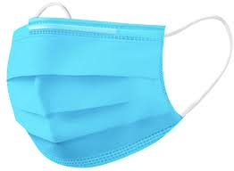
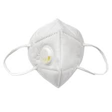
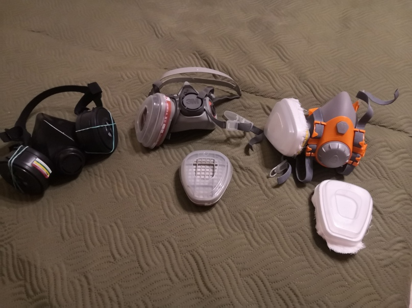
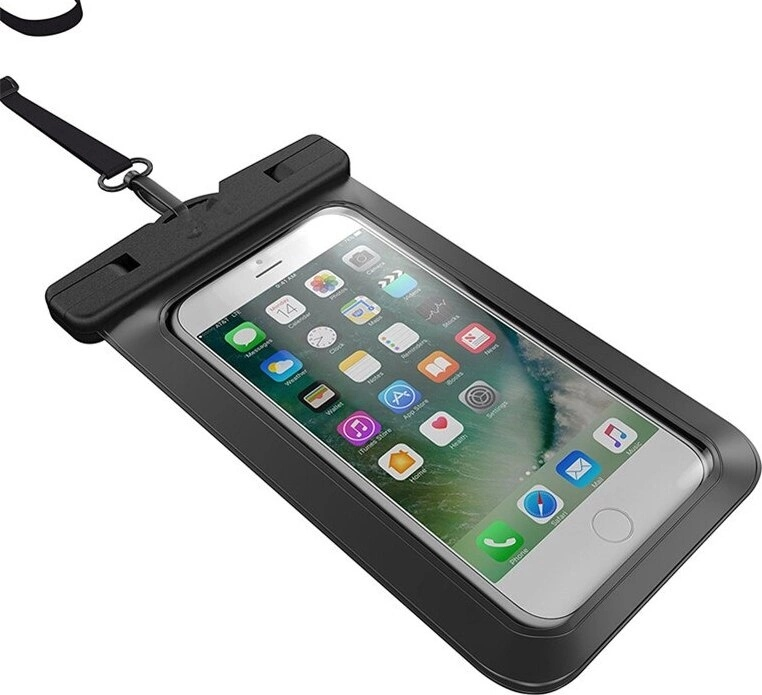

Йо, дамы и господа, соратники. Ни для кого не секрет, что у нас за окошком (да и не только у нас, а во всем мире)
эпидемиологическая обстановочка, мягко говоря, не очень. Поэтому, в такое тяжелое для всех время (ака кризис),
встает вопрос об организации собственной безопасности.
в которой я описал те аспекты, которые изучил еще во время начала этой всей вирусной заварушки. Перейдем сразу к делу.
«От чего мы защищаемся?» — от вируса, в частности CoVID-19 (в народе «корона»).
«Что такое вирус CoVID-19?» — мелкая неклеточная хренотень, которая, попадая в наш организм через слизистые
ротоглотки и коньюктивы глаз, вызывает у нас те или иные нарушения работы различных систем организма
(в частности, самый сильный удар идет по дыхательной системе (легким вашим *опа)).
Маска медицинская

Все вокруг орут о том, что нужно носить маски. И каждый, даже самый безнадежный дурачок понимает,
что этот кусок ткани сам по себе никого ни от чего не защитит.
Респиратор

Вот тут уже куда интереснее. Данная штуковина, при правильном за ней уходе и ее ношении сможет вас защитить от вируса.
Она более герметична, чем маска и имеет клапан выдоха. Учтите, что респиратор защищает только того, кто его носит,
окружающих от ваших «выдохов» он не защитит, тк выдох не фильтруется.
В период пандемии, все хитрожопые барыги резко взвинтили цены на любые респираторы, полумаски и фильтры.
Поэтому чтобы приобрести даже одноразовый респиратор, придется отдать минимум рублей 600. Здесь дорога подводит нас к первому лайфхаку:
Суть такая: покупаем четыре респиратора. Берем один и используем его целый день.
Затем кладем его в сухое и темное место и берем второй. Затем третий, и тд до первого
В чем тут фишка? Три дня в теплом сухом и темном месте хватит,
чтобы влага на респираторе высохла, а если нет влаги, нет и вируса, тк он без нее дохнет. Вот и получается такая своеобразная дезинфекция временем.
Полумаска

Самое эффективное и дорогое (относительно) средство защиты.
Плюсы: Герметично закрывает ваш рот и нос, позволяя дышать через специальные фильтры и выдыхать через клапан. Легко дезинфицировать и ухаживать.
Минусы: вызывающий внешний вид, цена.
Из производителей могу порекомендовать троих: ЩИТ, 3М, Jeta Safety. Но вы можете поискать кучу других.Разберемся из чего состоит полумаска.
- Сама непосредственно полумаска. Герметична от слова полностью и надежна, тк изготавливается чаще всего из резиноподобных материалов.
- Фильтры — разных типов защиты. Нас интересует буковка P. Это защита от аэрозолей.
Защита глаз
Ха, думаете я забыл? А вот и нет. Даже если у вас будет самая топ всея полумаска с фильтрами и прочим
фаршем — все это ничто, без защиты глаз. Обычные очки от солнца или для зрения, а может вы додумаетесь
юзать «защиные» очки для страйкбола… Нет, все это не защищает. Ключевое слово, которого стоит держаться — герметичность.
Все что герметично — безопасно.
Пара слов напоследок
Заменяйте ткань по мере ее загрязнения, оптимально каждые 12 часов, если вы просто будете ходить по улице.
(А лучше сидите дома, у нас вон уже очереди потихонечку на КТ возобновляются).
Небольшой лайфхак, который мы (на скорой), а также работники ковидных госпиталей юзали на работе.
Вы чаще всего держите в руках свою мобилу, соответственно на ней скапливается тонна всего. Чтобы каждый раз не протирать ее тряпочкой
с горячительным и не переносить на ней заразу, можно использовать специальные кейсы для плавания.
Не знаю зачем простым смертным это может быть нужно, но просто делюсь информацией.
